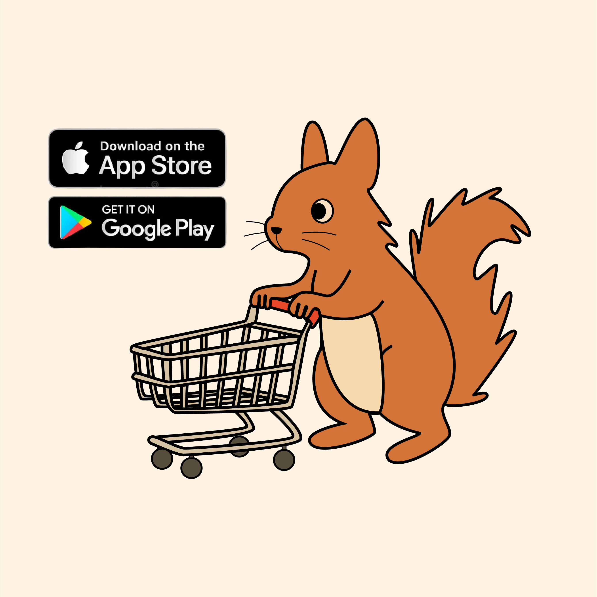

About Me
I am a senior at Grinnell College majoring in Computer Science with concentrations in Statistics/Data Science and Digital Studies. At Grinnell, I am currently working on a Senior Capstone Project on Human-AI Interaction.
I am also working at Carnegie Mellon University's Human-Computer Interaction Institute (HCII) as a part of the NSF REU Program. I work in Professor Paulo Carvalho's Optimized Algorithms and Knowledge (OAK) Lab to investigate how Large Language Models (LLMs) can optimize mastery-based testing to create personalized learning experiences for computer science students.
Prior to joining CMU HCII, I worked at Columbia University as a part of the Amazon Summer Research (SURE) Program. I worked with Professor Brian Smith's Computer-Enabled Abilities Lab to explore how augmented reality (AR) can be used to combat gentrification and preserve oral history in Harlem, New York.
My research interests lie at the intersection of human-AI interaction, social computing, learning sciences, hybrid intelligence, and human-AI collaboration. I am passionate about designing and developing human-centered AI systems that supports the way people communicate, learn, and collaborate, with the goal of shifting the narrative from automation to augmentation.
A little bit more about me: I was born and raised in Seoul, South Korea, and my family is from Omaha, Nebraska. In my free time, I enjoy hiking, traveling, going on very long walks, and spending time with my friends, family, and dog. Check out my 'Favorites' page for more!
Projects

Pioneer Mart Mobile Application
Developed a campus-based platform for buying and selling goods and services on campus, exclusive to the Grinnell College community with a team of 5.
Role: Product Manager and Frontend Developer.

Research @ Columbia-Amazon SURE Program
Gill, J., DiSalvo, L., Smith, B., (2024). Leveraging Augmented Reality to Preserve Community History. Columbia-Amazon SURE Research Symposium.
Gill, J., DiSalvo, L., Smith, B., (2025). Leveraging Augmented Reality to Preserve Community History. Grinnell College Computer Science Poster Session.